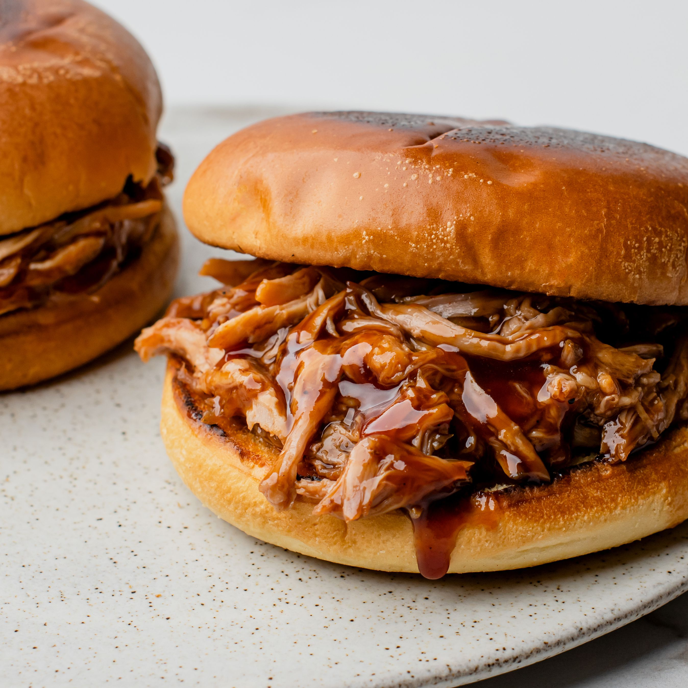

Pulled Pork Recipe

Desciption
Sweet and juicy
Ingredients
- 1 onion
- 6 garlic cloves
- 2 cans beef broth
- 1 bottle barbeque sauce
- 1/3 cup brown sugar
- 1/3 cup cider vinegar
- 1/2 teaspoon black peppr
- 4 pounds pork shoulder
- 2 tablespoon cornstrach
- 3 tablespoon water
Steps
-
Spread onion slices and garlic cloves in the bottom of a slow cooker;
stir in beef broth, barbeque sauce, brown sugar, cider vinegar, and
pepper. Add pork roast.
-
Cover and cook on Low for 6 to 8 hours. Remove pork from slow cooker.
Strain juices and return to the slow cooker. Mix water and cornstarch
in a bowl; stir into juices until sauce is thickened.